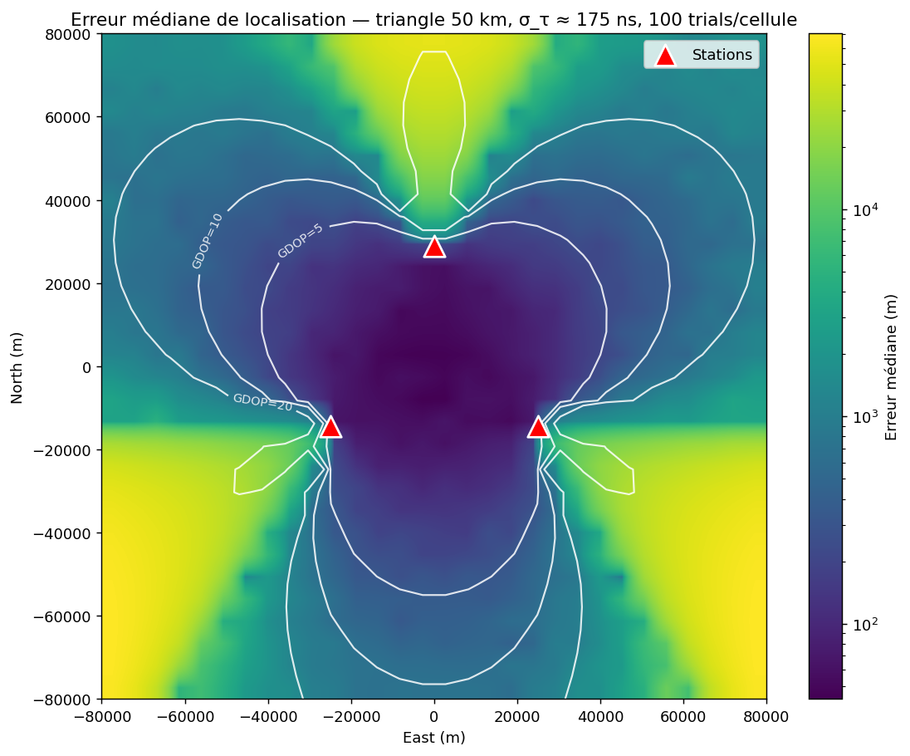
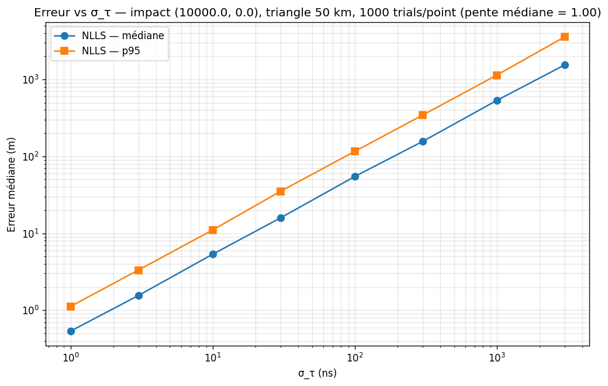

Physique / simulation
Lightning TDOA Simulator
Simulation d'un réseau VLF de détection de foudre à trois stations par multilatération TDOA et étude de la précision atteignable sous bruit contrôlé.

Contexte
À l'origine, un projet matériel : un détecteur de foudre VLF à trois nœuds, antennes cadre, cartes d'acquisition ESP32 et modules GPS pour la synchronisation temporelle. Le prototype a atteint le stade fonctionnel mais n'a jamais été finalisé, et le code d'origine n'a pas été conservé.
Ce simulateur reconstruit et formalise la partie algorithmique qui a survécu (la géométrie, le modèle de bruit, le solveur et les benchmarks) pour répondre aux questions que le prototype n'avait pas eu le temps de trancher empiriquement.
Le principe tient en une phrase : trois stations horodatent l'impulsion, deux différences de temps dessinent deux hyperboles, leur intersection donne la position. Ce qui m'a retenu, c'est l'écart entre cette idée, simple à énoncer, et la précision qu'exige son exploitation, tout se joue dans la synchronisation et l'horodatage.
Approche
Un éclair rayonne une impulsion VLF qui se propage à ~c ; trois récepteurs synchronisés la voient arriver à des instants légèrement différents. Pour une source en p et une station en rᵢ :
t_i = || p − r_i || / c + n_i
Le solveur travaille sur les différences de temps par rapport à une station de référence, ce qui élimine l'origine absolue. Deux solveurs sont implémentés derrière la même API : un minimisateur non linéaire aux moindres carrés (SciPy, chemin de production, extensible à N stations) et une intersection fermée des deux hyperboles (référence et contrôle).
La simulation s'arrête volontairement au niveau des temps d'arrivée, pas de synthèse de forme d'onde. Le but est d'exposer la structure géométrique du TDOA. Les hypothèses simplificatrices (propagation rectiligne à c constant, géométrie 2D, bruit gaussien indépendant) sont énoncées explicitement, car elles conditionnent la lecture des chiffres.
Point de conception qui compte : solver.py n'importe pas simulator.py. Le solveur consomme un simple dict[station_id, t_arrival]. Brancher de vrais récepteurs plus tard = écrire un nouveau producteur, sans toucher au solveur.
Résultat
- Trois stations sur une base équilatérale de 50 km, bruit de 100 ns : erreur médiane ~52 m dans le triangle, < 65 m jusqu'au cercle circonscrit.
- Pente log-log essentiellement de 1 sur quatre décades : la mise à l'échelle linéaire attendue à géométrie fixe.
- Taille de réseau optimale : côté ≈ 5× le rayon de la zone à couvrir — les stations doivent être éloignées, pas regroupées.
- Les deux solveurs se suivent à moins de 5 % ; le NLLS est retenu, car il généralise à N stations.

experiments/bench_heatmap.py) : erreur médiane par cellule sur 100 tirages Monte Carlo, avec les contours de GDOP = 5, 10 et 20. Faible à l'intérieur du triangle, elle s'envole le long des axes médians où la géométrie se dégrade.
Compétences
Démo & code
La démo web est un site statique (HTML/CSS/JS + Pyodide) : la bibliothèque Python est chargée telle quelle dans le navigateur, sans portage JavaScript. On déplace les trois stations, on déclenche des orages, et on regarde le solveur travailler.